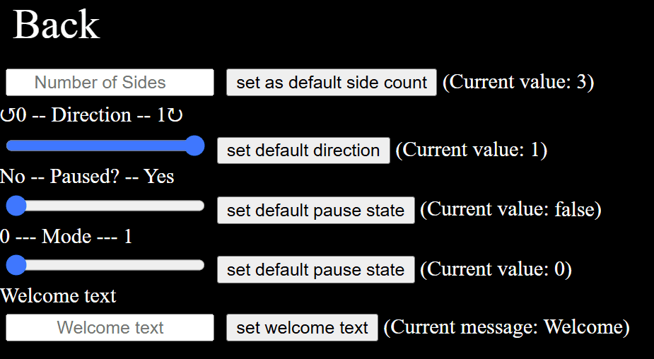
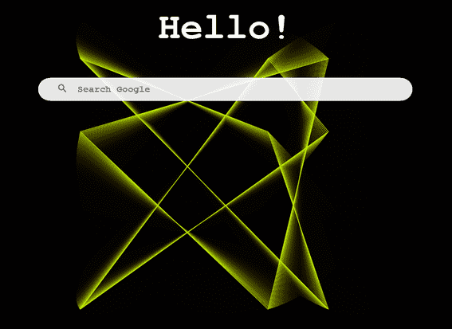

The settings page has a variety of initial values that can be adjusted, and then stored on the user's machine by utilizing the localStorage object in JavaScript, which uses a specified key to set and access that specific value. When the page is initialized, the main JavaScript file accesses the values set by the user and sets them to variables in the script to be used when setting up the page. This includes but is not limited to the Welcome message, the 10 bookmark links, and the 3 primary links. Ultimately this offers the user a large degree of freedom to what they want their page to look like on startup, which is pretty cool.
 